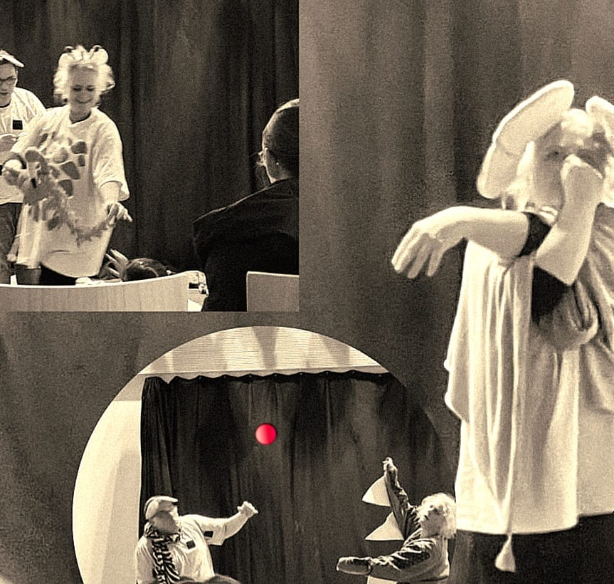
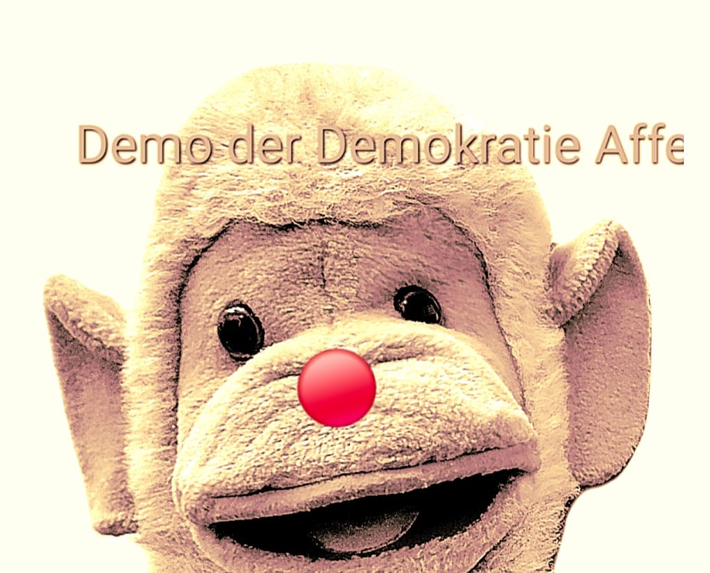

Mit unserem mobilen Theater kommen wir direkt zu Ihnen – in den Kindergarten, die Kita, die Grundschule oder zu besonderen Veranstaltungen für Kinder. Ob Kindergeburtstag, Sommerfest, Familienfeier oder pädagogisches Projekt: Wir bringen unser „Theater aus der Tasche“ mit und verwandeln jeden Raum in eine lebendige Bühne.
Unsere Stücke begeistern Kinder nicht nur durch spannende Geschichten, Musik und Mitmach-Momente, sondern vermitteln zugleich wertvolle Botschaften, die nachhaltig wirken.
🎭 Theaterstück: „Bojar sucht Farben“
Die Geschichte vermittelt Kindern auf spielerische Weise eine wichtige Botschaft: Du darfst so sein, wie du bist. Deine Wünsche, Ideen und Träume sind wertvoll, und genau so, wie du bist, bist du gut. Das Stück stärkt Selbstvertrauen, Individualität und gegenseitige Wertschätzung.

Flexibel & Anpassbar buchen
Unsere Aufführungen können Sie ganz nach Ihren Bedürfnissen anpassen:
- Mit oder ohne pädagogischen Nachbereitungs-Workshop
- Mit oder ohne begleitendes Buch (zzgl. 20 €)
- Auf Wunsch inklusive Unterstützung bei der Suche nach Fördermöglichkeiten für Ihr Projekt
🌈 Unterstützung & Fördermöglichkeiten
Jede Aufführung in München kann -nach Antrag, bei dem wir gern helfen - von der Regenbogenstiftung unterstützt werden!
Darüber hinaus bieten wir kreative Theaterworkshops für Kindergruppen an und entwickeln fortlaufend neue, tiefgründige Geschichten zu gesellschaftlich relevanten Themen.
🤖 Theaterstück: „Demo der Demokratie-Affe“
Dieses Stück bringt bereits den Kleinsten die Grundideen von Demokratie, Mitbestimmung und Gemeinschaft altersgerecht näher und lädt aktiv zum Nachdenken und Mitmachen ein.

🤝 In Kooperation
Dieses Angebot findet in wunderbarer Zusammenarbeit mit Marc Urban
und seinem Projekt
Theater Urban statt.
Wir freuen uns darauf, mit unserem mobilen Theater auch Ihre Einrichtung oder Veranstaltung zu besuchen!